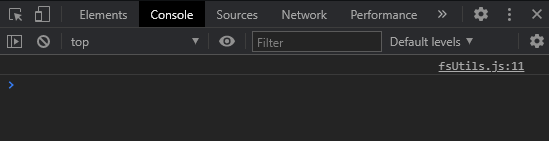

Uzak Masaüstü Bağlantısı ile windows işletim sistemli sunucuya bağlanıılır.
(windows + r kısayolunu kullanıp mstsc yazılarak Uzak Masaüstü Bağlantısı çalıştırılabilir.)
Sunucudaki tarayıcıdan (Chrome) https://html5.haxball.com/headless bağlantısını açılıp ctrl + shift + c kısayoluyla tarayıcı konsolu açılır.
Konsolda JavaScript context: top yapılır. Script kodları konsola yazılıp çalıştırılır.

Örneğin;
var room = HBInit({
roomName: "My room",
maxPlayers: 16,
noPlayer: true // Remove host player (recommended!)
});
room.setDefaultStadium("Big");
room.setScoreLimit(5);
room.setTimeLimit(0);
Daha sonra oda bağlantısı otomatik olarak oluşturulup ekranda belirecektir.
KESİNLİKLE BU TARAYICI SEKMESİNİ KAPATMAYIN! ODA KAPANIR.